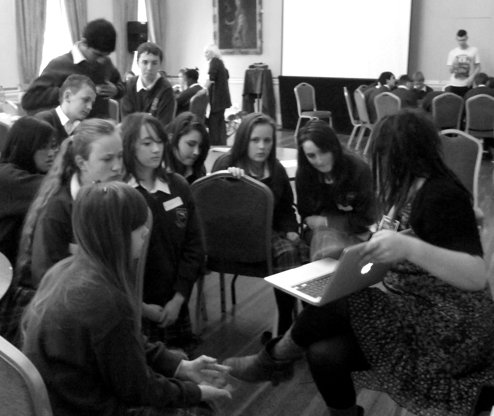

Who

Coming together through a shared science communication background and wont of educational reform, the cofounders of Fusion Factory are a group of well-educated and enthusiastic people in their twenties seeking to materialise and not simply talk about new approaches to education. They are extremely adept and personable communicators with a flair for invoking scientific curiosity through their amicable and non-condescending approach, see their individual profiles below.
Luke Connolly
I have two years Computer Science study and currently undertaking an honours degree in English Literature. With three years experience in science communication I have developed a deep interest in pedagogy, lending itself to a variety of communication outreaches such as guest lectureship and publication. I take an avant-garde approach to science communication and educational processes, and this represents one of the primary reasons for my involvement in Fusion Factory, which I believe adheres to an experimental, fun and unique philosophy.
Rosie Ellis
I completed my degree in Zoology in Trinity College Dublin in 2010. Whilst studying I began teaching Piano in a Dublin secondary school, and have been doing so now for the past four years thoroughly enjoying it! I have three years experience working in the field of science communication, explaining current and debatable revelations in science to the general public, including audiences of all ages. My communication experience has enabled me to develop teaching strategies that work in conjunction with the students’ personalities and interests, inspiring them through enthusiasm, creativity and fun! At its core, I believe Fusion Factory is fully realising the teaching values and articulation of science which should be striven for through regular teaching methods.
Cian Ó Rathaile
I completed my degree in Physics and Computational Simulation in Trinity College Dublin in 2009. I began working in Science communication two years ago and found it to be far more engaging and rewarding than laboratory work. Alongside this I have been a Scout leader in my local group for the past 5 years, which has given me superb practical experience of informal education at all levels. Previous experience in the games industry left me with a desire to adopt successful approaches to provide a motivational and challenging experience resulting in the development of practical problem solving skills and understanding.